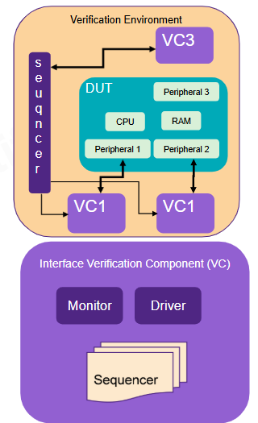
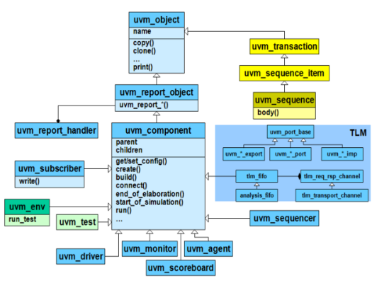
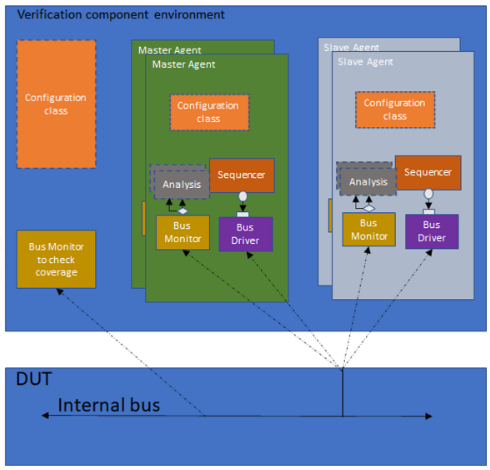
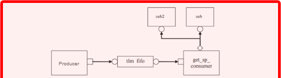

Ideia central
Até aqui o curso construiu um testbench em camadas: generator, driver, monitor, scoreboard, environment, mailboxes e virtual interfaces. UVM não apaga esse raciocínio. Ela dá nomes padronizados, fases padronizadas e uma biblioteca para montar esse mesmo ambiente de forma mais reutilizável.
A frase que organiza a aula é: UVM é uma metodologia e uma biblioteca de classes para estruturar verificação orientada a cobertura em SystemVerilog. O foco não é escrever RTL, e sim criar um ambiente que possa gerar estímulo, observar o DUT, comparar resultados, coletar cobertura e ser reaproveitado em outros blocos.

CDV: Coverage Driven Verification
O slide apresenta UVM junto com CDV, Coverage Driven Verification. A ideia é simples, mas muda a forma de trabalhar: a verificação não termina porque a simulação rodou sem erro. Ela termina quando as metas de cobertura e os checks importantes foram atingidos.
Em um fluxo pequeno, você pode rodar um teste dirigido e olhar uma waveform. Em um fluxo reutilizável, isso não escala. Você precisa perguntar: quais operações foram exercitadas? Quais combinações apareceram? O reset foi testado? Endereços de borda foram cobertos? O protocolo foi observado em estados difíceis? A cobertura transforma essas perguntas em métricas acompanháveis.
Biblioteca de classes UVM
O primeiro choque em UVM é a quantidade de classes. A forma mais limpa de estudar é separar duas famílias: objetos de dados e componentes estruturais. O erro comum é misturar as duas.

uvm_object. Os blocos que vivem na hierarquia
do testbench derivam de uvm_component; as transações derivam de uvm_sequence_item.
| Classe/ideia | Serve para | Exemplos |
|---|---|---|
uvm_object |
Objetos criáveis, copiáveis, imprimíveis e comparáveis. | Config objects, data items, transactions. |
uvm_sequence_item |
Uma transação gerada por sequence e consumida por driver. | Write/read item, packet, bus transaction. |
uvm_component |
Bloco estrutural com posição na hierarquia UVM e fases. | Driver, monitor, agent, env, scoreboard, test. |
uvm_env |
Environment que agrega agents, scoreboards e coverage collectors. | Ambiente do DUT ou de um subsistema. |
Fases: build, connect e run
A aula enfatiza que componentes UVM passam por fases. Isso substitui a montagem manual desorganizada do testbench por um ciclo de vida previsível.
Build
Cria componentes, busca configuração e instancia subcomponentes via factory.
Connect
Liga portas, exports, analysis ports e handles entre componentes.
Run
Executa tarefas que consomem tempo de simulação: dirigir, monitorar, coletar e comparar.
function void build_phase(uvm_phase phase);
super.build_phase(phase);
agent = my_agent::type_id::create("agent", this);
endfunction
function void connect_phase(uvm_phase phase);
super.connect_phase(phase);
agent.monitor.ap.connect(scoreboard.analysis_export);
endfunction
task run_phase(uvm_phase phase);
// Threads com tempo de simulação vivem aqui.
endtaskEsse padrão é importante para o projeto porque deixa claro onde cada coisa deve ficar: criação no build, conexão no connect, atividade temporal no run.
Sequence item, sequence, sequencer, driver e monitor
O testbench manual usava um generator para colocar itens em uma mailbox. Em UVM, essa ideia
fica mais formal: uma sequence cria sequence_items, o sequencer
organiza a entrega, e o driver transforma cada item em sinais reais do protocolo.
sequence -> sequencer -> driver -> interface/DUT
|
monitor <- interface/DUT -----+O monitor continua com a mesma função conceitual que você já viu nos blocos anteriores: observar sinais, reconstruir a transação real e publicar essa transação para consumidores como scoreboard e coverage.
Agent e environment
O agent é o pacote reutilizável de uma interface. Ele reúne monitor, e quando ativo também driver e sequencer. O environment reúne agents e componentes globais, como scoreboards, coverage collectors e configurações compartilhadas.

Agent ativo
Tem sequencer, driver e monitor. Gera estímulo e observa resposta.
Agent passivo
Tem apenas monitor. Serve para observar, checar e coletar cobertura sem interferir no DUT.
Factory
A factory é um dos conceitos que parecem burocráticos até você precisar trocar uma classe
sem reescrever o ambiente. Em vez de criar tudo com new(), UVM usa
type_id::create(). Isso permite override: um teste pode substituir um driver,
uma sequence ou um item por uma versão derivada.
my_driver drv;
function void build_phase(uvm_phase phase);
super.build_phase(phase);
drv = my_driver::type_id::create("drv", this);
endfunctionTLM: comunicação por contrato
TLM significa Transaction Level Modeling. Em UVM, TLM é o conjunto de portas, exports e
interfaces usadas para passar transações entre componentes sem acoplar diretamente as classes.
Em vez de um componente conhecer a implementação interna do outro, ele conhece um contrato:
put, get, write, FIFO, export etc.
| Mecanismo | Ideia | Quando usar |
|---|---|---|
put() |
Producer empurra uma transação para o consumer. | Quando quem produz decide o momento de envio. |
get() |
Consumer puxa uma transação disponível. | Quando quem consome controla o ritmo. |
uvm_tlm_fifo |
Fila TLM que desacopla producer e consumer. | Quando os processos devem trabalhar em ritmos diferentes. |
analysis_port.write() |
Publica uma transação para um ou mais subscribers. | Monitor para scoreboard, coverage e outros observadores. |
Analysis ports e subscribers
A analysis port é uma porta TLM especializada: sua interface essencial é uma chamada
write(). Ela é muito usada em monitores porque monitor normalmente publica fatos
observados para vários consumidores.

class my_monitor extends uvm_monitor;
uvm_analysis_port #(simple_trans) ap;
function new(string name, uvm_component parent);
super.new(name, parent);
ap = new("ap", this);
endfunction
task run_phase(uvm_phase phase);
simple_trans t;
forever begin
// Capturar sinais da interface e montar t.
ap.write(t);
end
endtask
endclassPonte com o que já estudamos
A forma mais saudável de aprender UVM é mapear cada peça para algo que você já viu no testbench manual. Assim a biblioteca deixa de parecer um conjunto de nomes soltos.
| Antes, no testbench manual | Em UVM |
|---|---|
| Transação/packet manual | uvm_sequence_item |
| Generator | uvm_sequence + uvm_sequencer |
| Driver manual | uvm_driver |
| Monitor manual | uvm_monitor com analysis_port |
| Scoreboard manual | uvm_scoreboard ou subscriber/checker |
| Environment manual | uvm_env |
| Mailbox/queue | TLM ports, exports e FIFOs |
Revisão forte
uvm_object e uvm_component?
uvm_object modela dados/objetos; uvm_component modela blocos hierárquicos com fases.